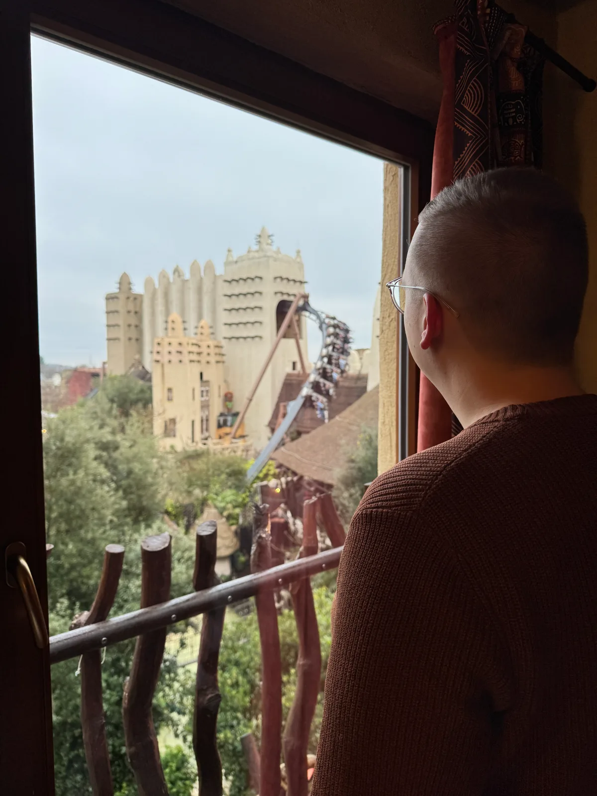
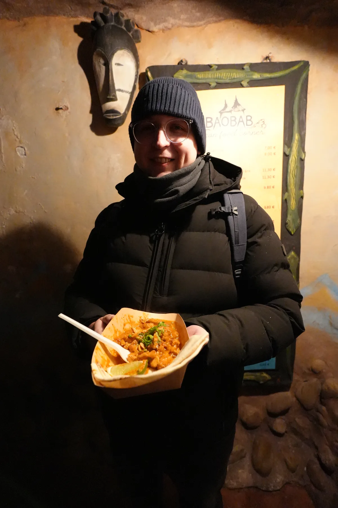
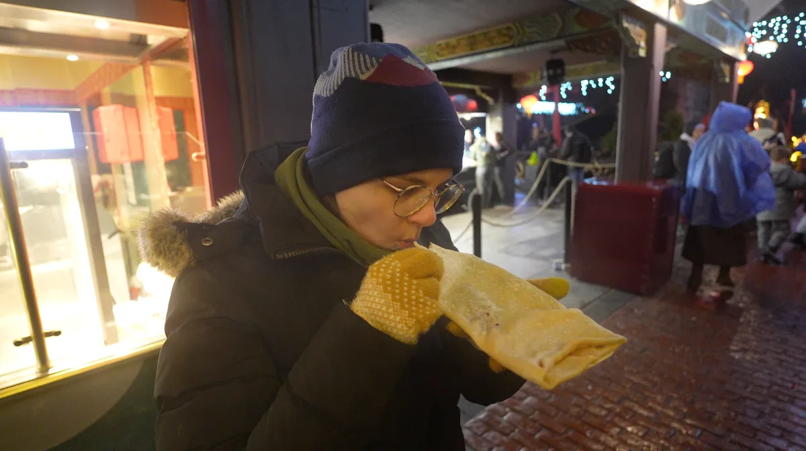
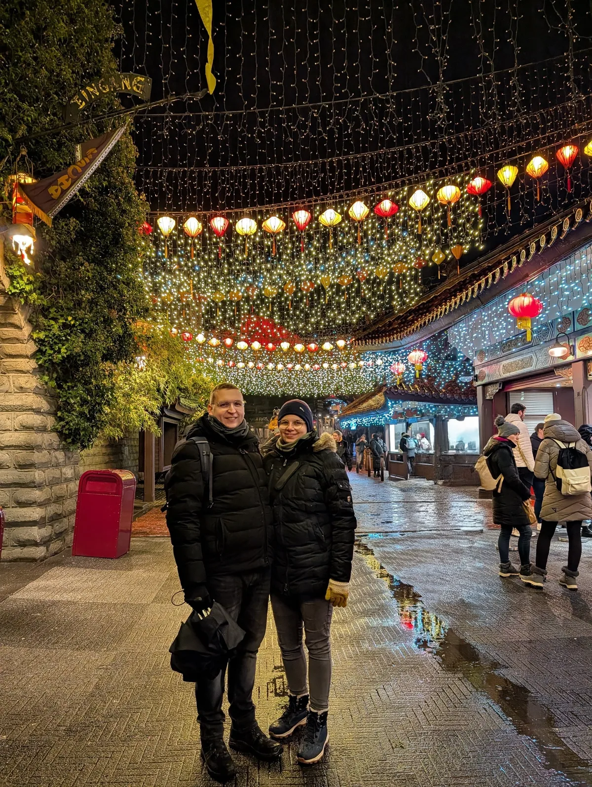
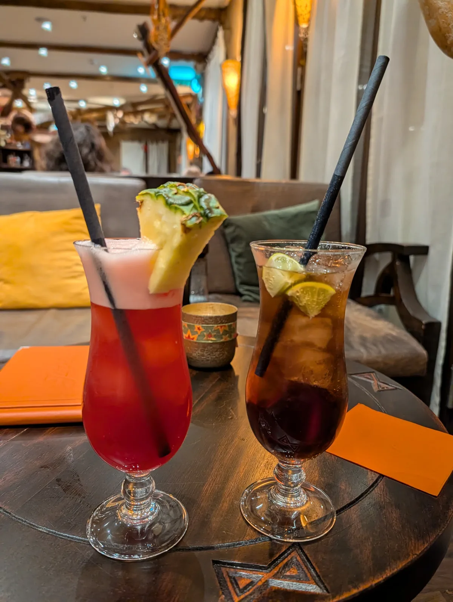
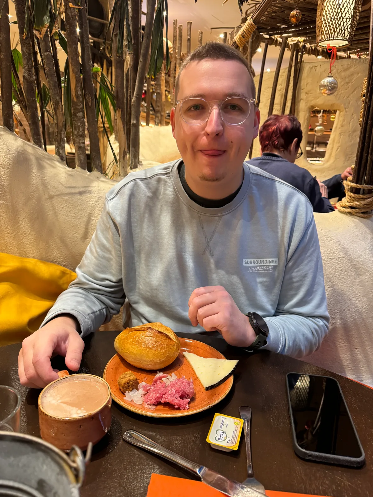
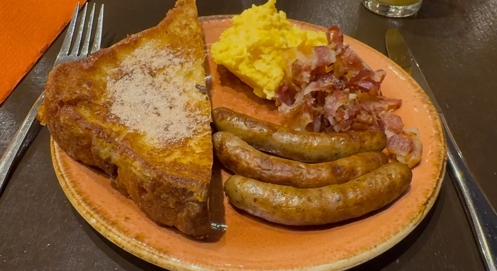

Dieses Jahr buchten wir neben unseren Phantasialand Wintertraum Tickets auch eine Übernachtung im Hotel Matamba. Und das erwies sich als die beste Entscheidung, die wir hätten treffen können. Unser Video dazu kannst du dir übrigens hier anschauen:
Direkt auf YouTube in der Playlist ansehen ↗
Im strömenden Regen warteten wir am 02.12. vor dem hoteleigenen Parkeingang auf die Eröffnung des Parks. Unser erster Weg führte uns zur Black Mamba. Wir waren mit die Ersten, die sie an diesem Tag fuhren und deshalb war es auch wahrscheinlich ganz besonders nass. Aber die Fahrt hat uns trotzdem sehr gut gefallen.
Gott sei Dank hörte es zwischendurch auch mal auf zu regnen und wir waren auf allen Achterbahnen und Attraktionen, die wir uns vorgenommen hatten.
Am Nachmittag machten wir uns auf den Weg ins Hotel, um uns ein bisschen auszuruhen und aufzuwärmen. Wir hatten einen großartigen Ausblick auf den Park. Danach konnten wir mit neuem Elan und trockenen Anziehsachen in den späten Nachmittag im Park starten.

Henning fand ein afrikanisches Gericht, das ihn so überzeugt hat, dass er immer noch davon schwärmt. Und für mich gab es einen leckeren Crepe.



Außerdem wollten wir noch unsere Speedy Pässe für eine Colorado Fahrt einsetzen. Leider haben wir die Fast Lane nicht gefunden und standen dann doch recht lange an. Mit den Pässen durften wir dann aber direkt danach noch eine Runde in der ersten Reihe fahren.
F.L.Y. hat uns nicht ganz so überzeugt und als wir später bei der Lasershow sahen, wie die Leute darin stecken geblieben waren und alle einzeln aus ihren Sitzen gehoben werden mussten, entschieden wir, das wir auch das letzte Mal damit gefahren waren.
Um 18 Uhr gab es eine schönes Feuerwerk und wir freuten uns anschließend darüber, dass wir nicht mit den Menschenmassen zum Parkplatz, sondern zurück ins Hotel gingen.

Dort haben wir noch leckere Cocktails getrunken und sind danach müde ins Bett gefallen.
Am nächsten Morgen konnten wir das Frühstück kaum erwarten und wir wurden nicht enttäuscht. Es gab Brot, Brötchen, Aufschnitt und neben Frenchtoast, Rührei, Bacon und Würstchen konnte man sich zum Beispiel auch Omeletts braten lassen.


Wir waren traurig, als wir dann auschecken mussten und bei diesem Wetter hat das Hotel unser Erlebnis im Phantasialand definitiv zu etwas ganz besonderem gemacht.